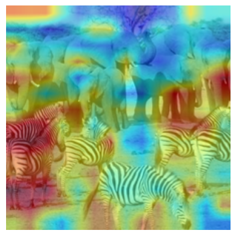
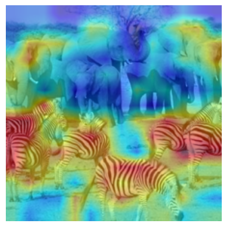
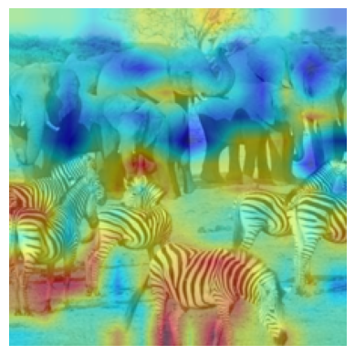
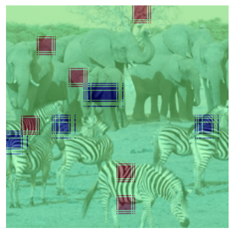

Let’s install the txv package#
[1]:
!pip install txv
Import necessary libraries.#
We will use vit-base-patch16-224 model in this tutorial. You can try this with other models in Available Models section as well. Note that this package works with models in Available Models section only.#
[2]:
from txv.vit import vit_base_patch16_224
from txv.utils import read_image, postprocess, show_exp_on_image
import torch
import matplotlib.pyplot as plt
[3]:
device = torch.device('cuda:0')
model = vit_base_patch16_224().to(device)
[4]:
image = read_image('../images/zebra-elephant.png').to(device)
Turn on saving of the model internals to visualize them in the next steps. Attention map and it’s gradients are saved by default. Here we are saving 7th block’s (0-indexing) Q, K and V matrices. You can save other block’s matrices as well.#
[5]:
model.blocks[7].attn.issaveq = True
model.blocks[7].attn.issavek = True
model.blocks[7].attn.issavev = True
[6]:
# Forward pass the image
output = model(image)
Extract the query matrix and take mean across heads and head_dim. Visualize with removing the CLS token. postprocess does normalization and bilinear interpolation of the query. show_exp_on_image merges image and query to show the resultant visualization.#
[7]:
#Get query value
query = model.blocks[7].attn.get_q()
#query is in shape of (batch_size, num_heads, num_patches, head_dim)
query = query.mean(dim=(1,-1))
#Let's remove CLS token
query = query[:,1:]
#postprocess and show_exp_on_image do required processing to get the final visualization
inp,query = postprocess(image, query)
cam = show_exp_on_image(inp[0], query[0])
plt.axis('off')
plt.imshow(cam)
plt.show()

Similarly, let’s visualize key and value#
[8]:
key = model.blocks[7].attn.get_k()
key = key.mean(dim=(1,-1))
key = key[:,1:]
inp,key = postprocess(image, key)
cam = show_exp_on_image(inp[0], key[0])
plt.axis('off')
plt.imshow(cam)
[8]:
<matplotlib.image.AxesImage at 0x7f119e3cbeb0>

[9]:
value = model.blocks[7].attn.get_v()
value = value.mean(dim=(1,-1))
value = value[:,1:]
inp,value = postprocess(image, value)
cam = show_exp_on_image(inp[0], value[0])
plt.axis('off')
plt.imshow(cam)
[9]:
<matplotlib.image.AxesImage at 0x7f119e2efc70>

Now, let’s visualize attention.#
[10]:
attn = model.blocks[7].attn.get_attn()
# attn is in the shape of (batch_size, num_heads, num_patches, num_patches)
attn = attn.mean(dim=(1,-1))
# Let's remove CLS token
attn = attn[:,1:]
# Postprocessing
inp,attn = postprocess(image, attn)
cam = show_exp_on_image(inp[0], attn[0])
plt.axis('off')
plt.imshow(cam)
[10]:
<matplotlib.image.AxesImage at 0x7f119e2efac0>
